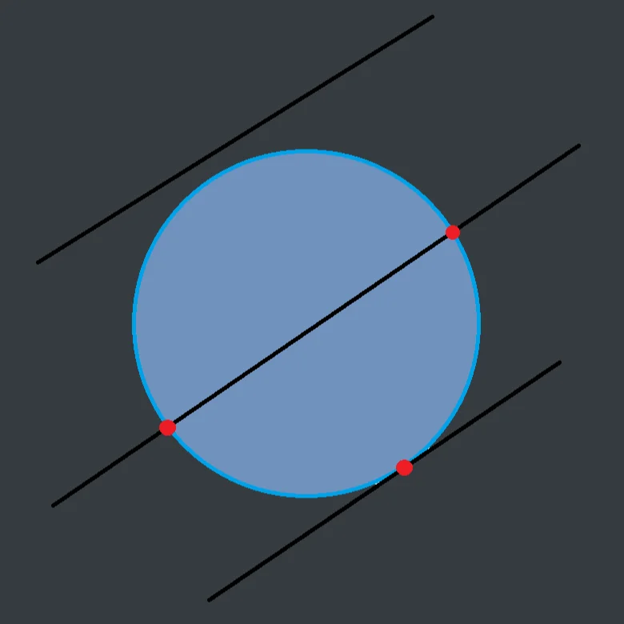

R-3 : Basic Shapes (Time for Maths)
Adding our first shape, a sphere, and working through the Ray-Sphere intersection equations step by step.
Ray-Sphere Intersection
A sphere is the easiest shape to test for an intersection with a ray.
The equation for a sphere of radius r centered at the world origin is :
X2 + Y2 + Z2 = r2
Any point for which this value is less than r2 is inside the sphere, and outside for the opposite.
Displacing the Sphere
If the sphere center is at CX, CY, CZ, the equation becomes :
(X - Cx)2 + (Y - CY)2 + (Z - CZ)2 = r2
Simplifying with vectors, C the center, P the point to check, the vector from center to point is (P - C).
DOT Product
We can obtain the sphere formula using the dot product :
(P - C) · (P - C) = (X - CX)2 + (Y - CY)2 + (Z - CZ)2
Any point P that satisfies this equation is on the sphere.
Does the Ray Hit?
We want to know if our ray P(t) = O + td ever hits the sphere. That means finding a t for which P(t) satisfies the sphere equation.
(P(t) - C) · (P(t) - C) = r2
Expanding P(t) :
((O + td) - C) · ((O + td) - C) = r2
Developing
Focusing on the t components :
t2d·d + 2td·(O - C) + (O - C)·(O - C) - r2 = 0
Quadratic Solve
We know the radius and the direction of the ray, our only unknown is t. So we solve the quadratic :
Where :
- a = d · d
- b = 2d · (O - C)
- c = (O - C) · (O - C) - r2
Now to Actually Raytrace
The discriminant tells us how many solutions exist :
- > 0 : 2 real solutions (ray hits sphere at two points)
= 0 : 1 real solution (ray grazes the sphere)
- < 0 : no real solutions (ray misses)
We hard-code the formula to test it :
Raytracing.cpp
bool HitSphere(const Position& rCenter, double radius, const Ray& rRay)
{
Vector3 oC = rRay.GetOrigin() - rCenter;
double a = Dot(rRay.GetDirection(), rRay.GetDirection());
double b = 2.0 * Dot(oC, rRay.GetDirection());
double c = Dot(oC, oC) - radius * radius;
double discriminant = b * b - 4 * a * c;
return (discriminant >= 0);
}
Color RayColor(const Ray& rRay)
{
if(HitSphere(Position(0, 0, -1), 0.5, rRay))
return Color(1, 0, 0);
Vector3 unitDirection = Unit(rRay.GetDirection());
double blue = 0.5 * (unitDirection.y + 1.0);
return (1.0 - blue) * Color(1.0, 1.0, 1.0) + blue * Color(0, 0, 1.0);
}You should now see a sphere emerge from the background, no shading yet, but it's a start!
Note: this solution currently allows negative t values (behind the camera), we'll fix that later.
We'll see shading in the next one. See ya!